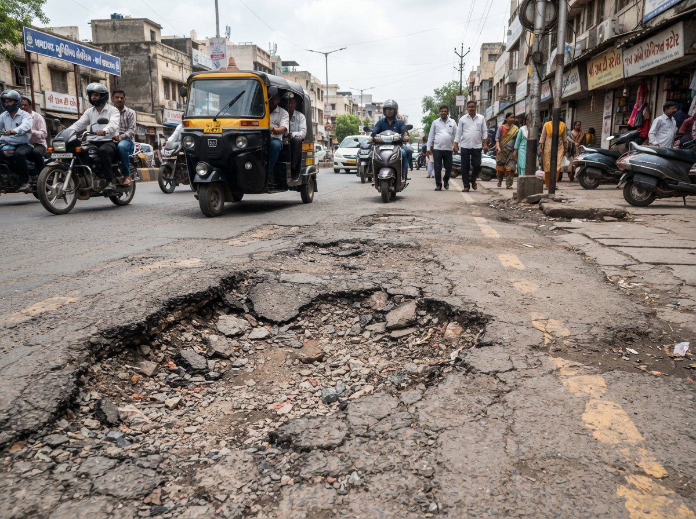

AI Autonomous Triage Active
timer
Avg. Dispatch: 4.2 Hours
map
Coverage: 48 AMC Wards
verified
Auto-Routing Accuracy: 98.4%
bolt
Zero Ward Office Visits • Zero Manual Bureaucracy
Real-Time Autonomous Grievance Resolver
Drop a photo or select an incident scenario to witness multi-modal computer vision classification, automatic AMC ward jurisdiction mapping, and instant department SLA dispatch.
Choose Scenario:
emergency_heat
SG Highway Pothole (Level 4 Hazard)
water_damage
Navrangpura Water Pipe Burst
delete_sweep
Kankaria Garbage Dump
lightbulb
Thaltej Streetlight Inactive
add_photo_alternate
Drag & drop photo or click to browse
JPG, PNG, WebP • Max 10MB • Auto GPS extraction

AI Visual Confidence: 99.2%
Pakwan Cross Road, Opp. Sindhu Bhavan Entry, S.G. Highway
pin_drop
23.0487° N, 72.5074° E (North West Zone - Bodakdev Ward)
Quick AMC Zones:
Bodakdev
Navrangpura
Satellite
Maninagar
Thaltej
"Here is a dangerous pothole near Pakwan crossroads on SG Highway damaging two-wheelers during rush hour."
Citizen (Keval M. Shah) • Delivered
AMC CivicAI: "તમારી ફરિયાદ સ્વીકારવામાં આવી છે. The photograph confirms a Level-4 deep road crater under North-West Zone (Bodakdev Ward). Priority dispatch token lodged with Roads & Buildings Dept."
Auto-dispatched to Quick Response Crew • 10:14 AM
Analyzes photograph to classify hazard, severity matrix score, and damage category.
Maps GPS coordinates and landmark strings against official AMC ward polygons.
Assigns jurisdictional municipal department, designated duty officer, and SLA timeframe.
Creates official AMC complaint tracking ID with immutable timestamp and SLA clock.
⏱ SLA: 24 Hours (URGENT PRIORITY)
Complaint assigned to Duty Engineer R. V. Patel (Junior Engineer, Roads & Buildings Dept).
📋 Copy Tracking Token
🔍 Track Ticket Status
CivicAI Kernel v4.2 • Public Transparency Registry
Agent Autonomous Tool Execution Trace
Auditable, real-time telemetry tracing the exact database lookups, confidence scores, and routing decisions for civic complaint tickets.
model_training
MODEL ARCHITECTURE
Vision + AMC Geo-GIS
bolt
AUTOMATION TIER
Zero Human Triaging
Underlying mock AMC administrative database simulating real-time Ward Officer availability and dispatch queues.
Ward
Officer
Status
W08 Bodakdev R. V. Patel
On Duty
W12 Navrangpura K. M. Solanki
On Duty
W24 Maninagar N. S. Prajapati
On Duty
W09 Thaltej D. C. Joshi
On Duty
AMC Citizen Grievance Portal • Real-Time Tracking
Track Complaint Status
Monitor real-time progress, field unit movement, and SLA compliance countdown for any AMC complaint token.
✓
Reported & AI Verified
Citizen photograph scanned via AMC Vision-LLM. Pothole classified as Level 4 severity crater.
Today, 10:14 AM
✓
Assigned to Roads & Buildings Dept
Automated jurisdiction matching assigned the incident ticket to duty nodal engineer R. V. Patel (Bodakdev Ward).
Today, 10:15 AM
⚙
Crew Dispatched (Van QRT-04 En-Route)
Quick Response Team dispatched to incident site at Pakwan crossroads with cold-mix asphalt repair material.
Today, 11:30 AM
○
Work Completed & Citizen Sign-off
Repair completed. Photo verification uploaded by field crew and ticket closed.
Pending verification
Field Unit Van QRT-04 is moving along S.G. Highway towards Pakwan Junction.
Van QRT-04
Near Iscon Flyover
🔍
Track Any AMC Complaint
Enter a valid tracking ID (e.g., AMC-2025-RD-88421) to view the live timeline and field unit status.
Ahmedabad City Governance Directory • 48 Wards & 7 Zones
AMC Wards & Municipal Departments
Explore administrative zones, ward officers, and average redressal times across all 48 wards in Ahmedabad.
Wards Active
48 / 7 Zones
Avg Grievance SLA
42.4 Hours
Citizen Satisfaction
93.8%
satellite
Ahmedabad GIS Administrative Satellite Corridor
Sabarmati River & SG Highway Infrastructure Network
Integrated geographic boundary telemetry covering all 48 wards from Chandkheda (North) to Kankaria (South) and Bodakdev (West) to Vastral (East).
● 48 Wards Active
● 7 Administrative Zones
● Central Redressal Control: 079-25391811
Core Municipal Redressal Departments